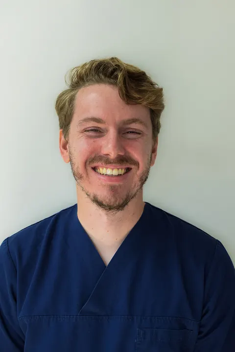

Kroon of brug: wat is het verschil?
Kronen en bruggen vervangen tanden of kiezen die niet meer goed functioneren. Een kroon is een kapje over een afgeslepen tand of kies, dat er weer uitziet als een gave tand. Een brug vervangt één of meer ontbrekende tanden en wordt vastgezet op de tanden ernaast (de pijlers). Ontbreken die pijlers, dan kan een brug op implantaten een oplossing zijn.
Hoe verloopt de behandeling?
Meestal heeft u drie afspraken nodig:
- Voorbereiden. De tand wordt onder verdoving afgeslepen en er wordt een afdruk gemaakt. U gaat naar huis met een tijdelijke kroon.
- Passen. Ons tandtechnisch laboratorium maakt de kroon of brug; we passen en controleren kleur en beet.
- Plaatsen. De kroon of brug wordt definitief vastgezet.
Omdat ons laboratorium in de praktijk zit, overleggen tandarts en tandtechnieker direct met elkaar. Dat merkt u aan de pasvorm en de kleur.
Welke materialen zijn er?
- KeramiekTandkleurig en natuurgetrouw. De mooiste keuze voor zichtbare tanden.
- Goud-keramiekEen sterke goudbasis met een tandkleurige laag erover.
- GoudZeer sterk en slijtvast; door de kleur vooral voor kiezen achter in de mond.
- Inlay of onlayEen gedeeltelijke kroon als een groot deel van de kies nog gezond is. Van keramiek, goud of composiet.
- FacingDun schaaltje voor een mooiere voorkant van de tand; verkleurt niet door koffie of thee.
- Opbouw met stiftExtra steun voor de kroon als er weinig tand over is, verankerd in het wortelkanaal.

Veelgestelde vragen
Hoe lang duurt het voordat mijn kroon klaar is?
Meestal zijn er drie afspraken nodig: voorbereiden, passen en plaatsen. In de tussentijd heeft u een tijdelijke kroon, zodat u gewoon kunt eten en lachen.
Wat kost een kroon of brug?
De tarieven zijn vastgesteld door de Nederlandse Zorgautoriteit (NZa); daarnaast zijn er techniekkosten voor het laboratorium. U krijgt vooraf een begroting, bij bedragen boven de € 250 ook schriftelijk.
Wordt een kroon vergoed?
Voor volwassenen niet uit de basisverzekering, wel vaak deels uit een aanvullende tandartsverzekering. Ook voor kinderen tot 18 jaar vallen kronen en bruggen buiten de basisverzekering.